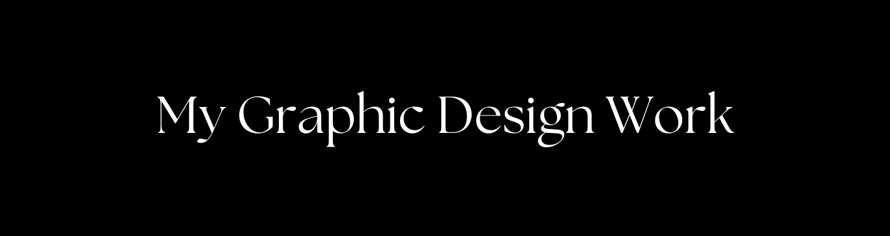
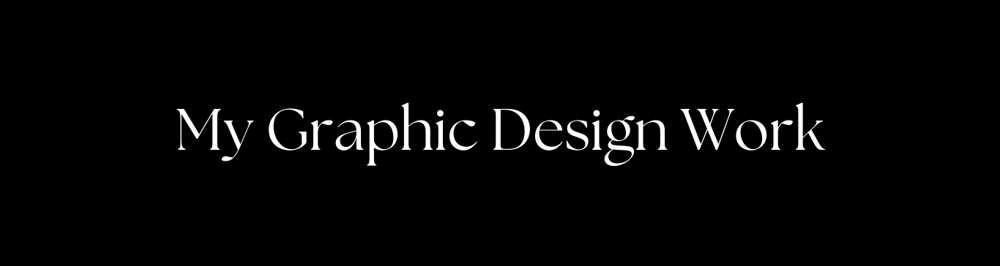
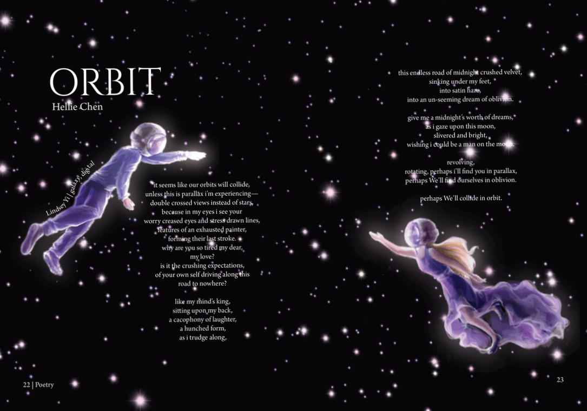
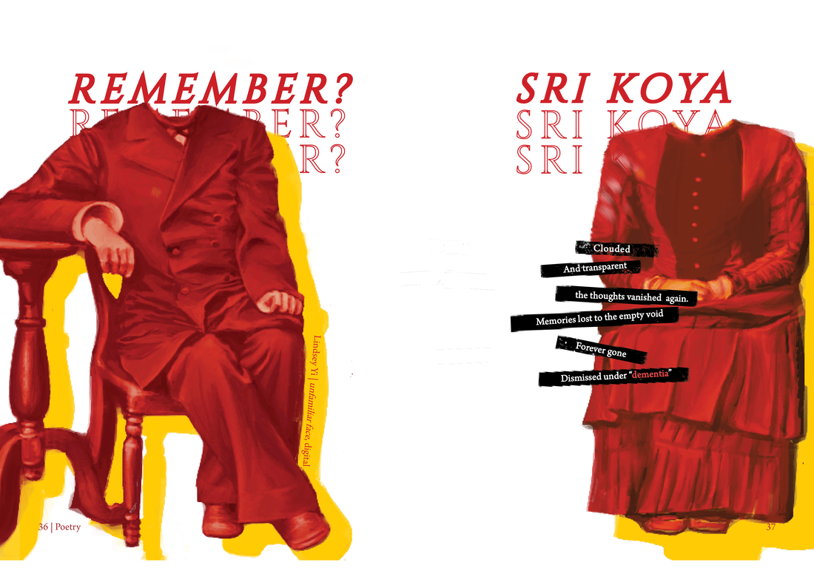
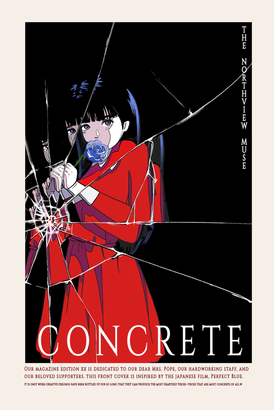
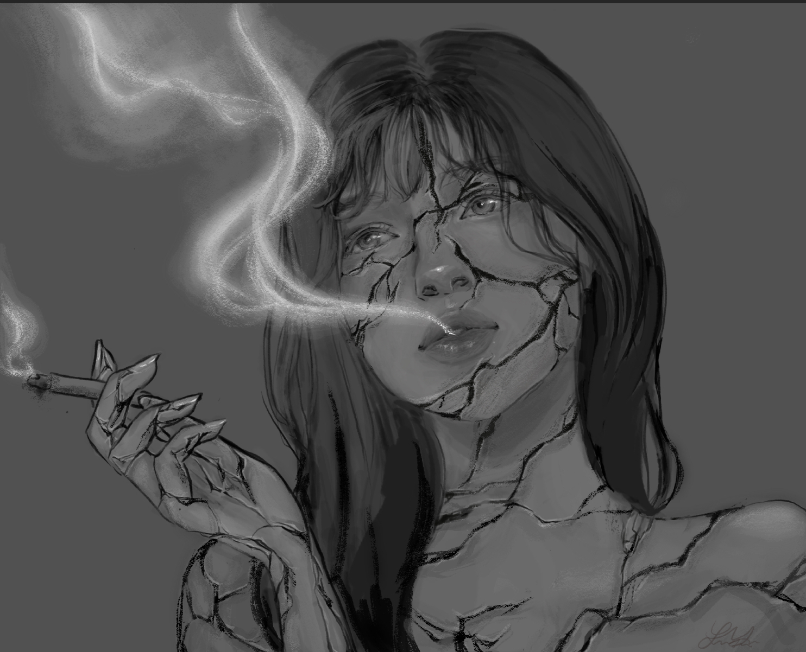
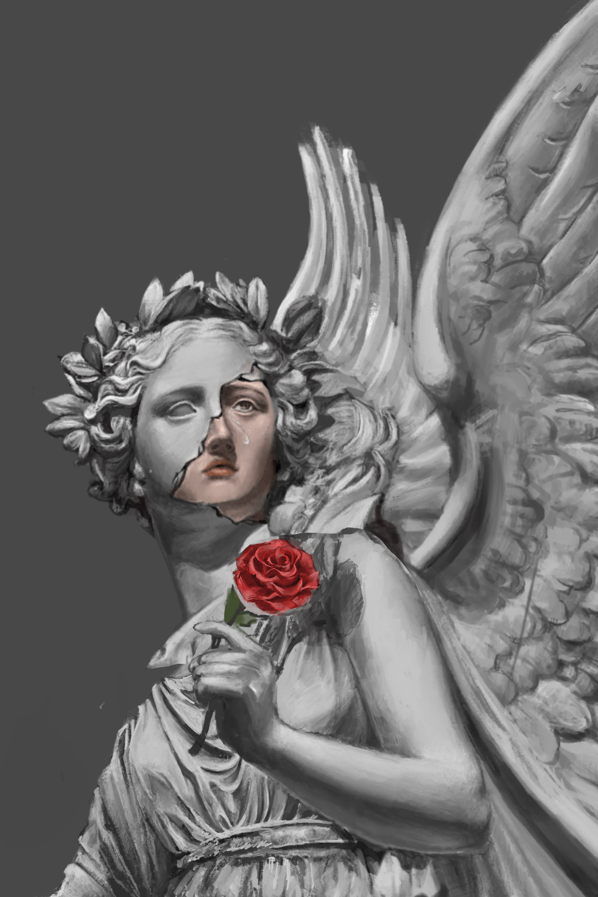

Design: Orbit (2022)
Art: galaxy (2022)

This piece showcases a man and a woman in space as if in a dance with celestial bodies. "Orbit" was created using Procreate, drawn from my iPad. The creation process involved combining it with a poetic narrative (accredited to another student) that discusses the otherworldly feel, along with a blend of Adobe Photoshop and InDesign.
Design: Remember? (2022)
Art: unfamiliar face (2022)

"Remember?" is an evocative piece that delves into the themes of memory and identity. Utilizing Procreate, I drew a scene of a husband and wife's portrait. Then using Photoshop and InDesign, I filtered the image to be red and added fragmented text, creating a compelling interplay between image and words.
Design: Sound (2022)
Art: Dancing with the Stars (2021)

A tender and atmospheric piece, "Dancing with the Stars" is a tribute to the grace of ballet and the inspiring impact of my literature teacher, Mrs. Pope. Along with the main piece, I used a variety of programs to create ethereal elements like clouds and feathers that complement the accompanying text.
Concrete (2022)
The "Concrete" literary arts magazine cover features a striking illustration inspired by the film "Perfect Blue," showcasing a character with a vivid blue rose, her image fractured as if through broken glass. The bold composition, drawn on Procreate and polished in Photoshop, creates an impactful visual narrative for the edition it represents.
Cracked (2020)
This digital artwork, titled "Cracked," portrays a monochromatic portrait of a woman fragmented by deep fissures, through which wisps of smoke escape, suggestive of an inner turmoil or breaking point. The raw and emotive quality of this piece is masterfully rendered in Adobe Photoshop, reflecting the complexities of the human psyche.
Concrete (2021)
The grayscale image "Concrete Angel" captures the stoic beauty of a classical statue, with a single vibrant red rose bringing a stark contrast to the composition. This evocative piece, painted in Adobe Photoshop, conveys a sense of timeless grace marred by a subtle hint of sorrow, as evidenced by the statue's cracked surface and the solitary tear.
blood red (2021)

This piece, drawn in Procreate, is a striking and conceptual portrait named "Blood Red." The subject's eyes are obscured by a vivid red stripe, which drips down the canvas, suggesting a violent obliteration of sight or identity. The minimalist background amplifies the dramatic effect, leaving viewers to ponder the story behind those concealed eyes.
Perfect Blue (2023)

This illustration is a homage to the animated psychological thriller "Perfect Blue." Rendered in a minimalist style with a monochromatic pink palette, it captures the complex and haunting nature of the film’s protagonist. The artwork, drawn in Procreate, carries an air of simplicity while encapsulating the intense and psychological aspects of the narrative.